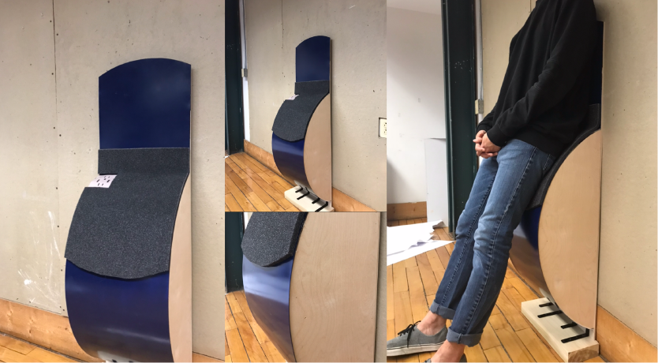

Background
During 2018 Fall me and my group got the assignment to renovate Providence Train Station. I choose to put my focus on the problems of the platform seating. My main intension of this assignment is to initialling a more effcient seating for public area that can statisfy commuters' needs.
Research
According to our research, adults at the age around 20 are the main group of people who’s taking the train. They use train a more convenient and cheaper way to go. People usually arrive at the station 30 mins before the departure time. During the waiting time they spent time with their electronic devices. And for those people who is arriving at providence, most people take uber or lyft as transportation when they leave the train station. Their waiting time is usually 10-20 mins depends on how long the uber take.
Problems
During the waiting time, the problems appear. First, with so much electronic devices in use, there is no obvious charging ports or place. When we are in the station, it is really hard to find a plunge in on the wall. Also, the seating on the ground level is not enough or comfortable for most of the people. There is no seating at outside although people has to wait for the uber. The seating inside is also awkward to sit. The large circle is not efficient enough and takes lots of space.
Idea Development
According to the research and problems, I see the need for a quick charging station for people for a quick rest. Thus I figured out a position to intentionally lead commuters for a quick stay, which is leaning.
Charging + Leaningc
Full Scale Model
